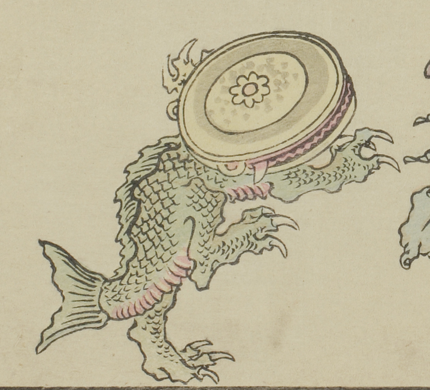

鰐口の化物。頭部が鰐口で、鱗が生えた爬虫類のような胴体に、魚のような尾がついている。後ろ足で立ち、前方に歩いている。
出典：親書誌：U426_nichibunken_0093：暁斎百鬼画談；ギョウサイヒャッキガダン／日付：2006／資源識別子：U426_nichibunken_0093_0003_0000
Copyright (c)2010- International Research Center for Japanese Studies, Kyoto, Japan. All rights reserved.